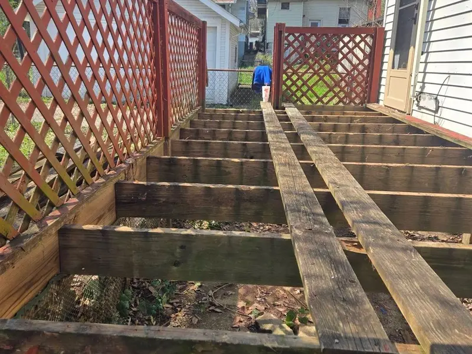

A deck repair and restoration specialist in a market where almost everyone else sells new decks.
The Deck Repair Wizard – Baltimore repairs and restores decks. That's the entire business. We don't sell new deck construction, which is exactly why homeowners across the Baltimore metro end up calling us after somebody else quoted a full rebuild for a problem that was three boards deep.
We're insured and bonded, we've been doing deck repair for ten years, every estimate is free and in writing, and the repairs we make are backed by a workmanship warranty. We work from a base in Lutherville-Timonium and cover the Baltimore metro from there — Baltimore County, Howard, Anne Arundel, Harford and Carroll, plus rowhome rooftop decks in Baltimore City.
Because in this market, nearly every company with "deck" in the name is a builder. Building a new deck is a bigger ticket, it's easier to schedule, and it's far simpler to price than crawling under a 30-year-old structure to work out which joists are still sound. So when a homeowner calls about a soft spot near the door or a railing that moves, the visit very often ends with a proposal for a whole new deck.
Sometimes that proposal is correct. Often it isn't. A deck with solid framing and twelve bad boards is a repair job, not a demolition job — and the difference between those two answers is usually thousands of dollars. Someone has to be in the market whose business model doesn't quietly reward the bigger answer. That's the gap we fill.
We fix what can be fixed. When a deck genuinely is past saving, we say so plainly and explain why — and you're free to take that information to whoever you like, because we're not the ones building the replacement.
It means we start from the assumption that your deck can be saved and work backwards from there, instead of starting from a rebuild and looking for reasons to justify it. In practice that changes three things.
First, we diagnose before we quote. A bouncy deck can be an undersized joist span, a loosened ledger connection, a rotted post base, or a beam that was never blocked properly — four different problems with four different price tags. Guessing at the cause from the deck surface is how homeowners end up paying to fix the wrong thing twice.
Second, we separate cosmetic from structural. Graying, splintering, mildew streaks and a finish that's stopped beading water are surface problems, and a full restoration handles them without touching the frame. Soft wood at post bases, a ledger fastened with nails, or a stair stringer sitting on bare soil are safety problems, and they get priority no matter how good the deck looks from the kitchen window.
Third, we scope repairs so they blend. Replacing boards is easy; replacing boards so the deck doesn't look patched takes matching, spacing and finish work that a lot of crews skip. Board replacement is a big part of what we do, and blending it in is most of the craft.
The inspection is free, it takes a real look at the whole structure, and you get the findings in writing. Here's the order we work in:
Then you get a written, itemized estimate with the repair-or-replace call made in plain language — plus whether your county requires a permit for the work. You can book that directly through our deck safety inspection service.

The framing decides it, not the decking. If the joists, beams, posts and ledger are sound, almost everything above them is repairable — boards, railings, stairs and finish are all replaceable pieces on a frame that's doing its job. We lean toward replacement when the rot is in the structure rather than on it, when the original construction can't be brought up to current requirements without effectively rebuilding it anyway, or when the repair cost starts closing in on half the price of a new deck.
We tell you which of those you're looking at before any work is scheduled, and we'll show you what we're basing it on. If you want to understand the reasoning before we ever come out, we wrote it up in detail in our guide to repairing versus replacing a deck, and the cost page lays out what drives a repair quote up or down.
This part is consumer education, not a sales pitch — it applies to every contractor you talk to, including us. Maryland treats deck work as home improvement under state business regulation, and there are protections worth knowing about before you sign anything.
From Lutherville-Timonium, at the I-695 and I-83 interchange, which puts most of the metro's deck-heavy neighborhoods inside a short drive. We work across Baltimore County, Howard County, Anne Arundel County, Harford County and Carroll County, and we handle rowhome rooftop decks in Baltimore City — a niche that needs its own knowledge, since a rooftop deck spans party wall to party wall on shared masonry rather than hanging off a ledger. See every area we serve, or start with the full range of deck repairs we handle.
Free inspection, a written estimate, and a straight repair-or-replace recommendation — no pressure and no upsell.
📞 Call (667) 239-8644 Request a Free Quote